Creating a VBA add-in with its own ribbon tab in Excel
How to package VBA macros into an .xlam add-in with a custom ribbon tab: editing the workbook as a zip archive, customUI.xml, callbacks and installation.
Many people who work in Excel a lot have built up a collection of VBA macros that make daily work easier. Some keep them in a separate workbook; others put them in a personal macro workbook (personal.xlsb), which is available application-wide, and added buttons to the toolbar by hand. In the first case the collection is easy to share with colleagues (just send the file), but the workbook has to be opened every time you want to use it. In the second case the functions are available as soon as Excel starts, but passing them on to other users can be a problem.
This article describes how to make a VBA add-in with its own tab on the Excel ribbon (Ribbon), combining the advantages of both approaches. It is an xlam file that can be shared like an ordinary workbook. When a user opens it, a tab appears on the ribbon that gives access to the add-in functions:
If you wish, the add-in can be installed permanently so you do not have to open it each time.
You will need Excel, 7-Zip and Visual Studio Code. The last two are optional: any archiver that supports zip and any text editor that can save UTF-8 (if you want to use Cyrillic) will do. A basic understanding of XML helps too.
The code and the finished xlsm workbook are on GitHub: https://github.com/navferty/SampleExcelXlamAddin
Preparing the workbook
Open a new workbook and add a module with sample code:
Option Explicit
Public Sub SayHelloWorld()
Dim firstCellValue As String
firstCellValue = ThisWorkbook.Worksheets(1).Cells(1, 1).Value
MsgBox "Hello, world! Cell A1 value is " & firstCellValue
End SubSave the workbook as xlsm (macro-enabled workbook). Modern Office document formats (xlsx, xlsm, docx, docm, pptx and so on) are based on the OpenXML standard and are simply zip archives made of components (XML files for the sheets, images, binary content and so on) and relationship files (.rels) that define the structure of the document by linking to the components.
To see what is inside, you can rename Sample.xlsm to Sample.zip and open it with any archiver. Some archivers, such as 7-Zip, can open these files directly without renaming:
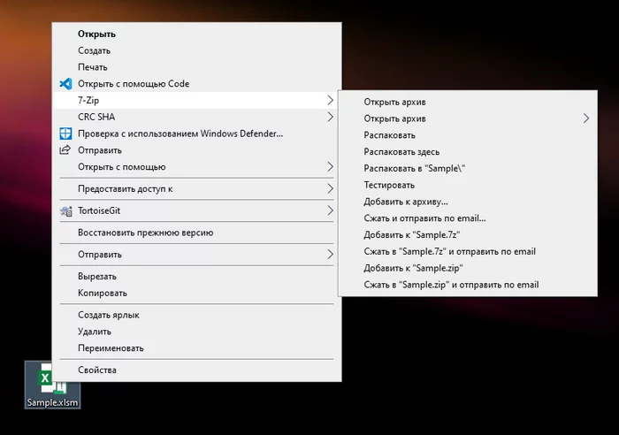
To add a ribbon tab we need to create a new component, customUI/customUI.xml, and add a reference to it in the root relationships file, _rels/.rels.
Extract the whole document into a separate folder (in 7-Zip: “Extract to "Sample\"”) and create a customUI folder in it:
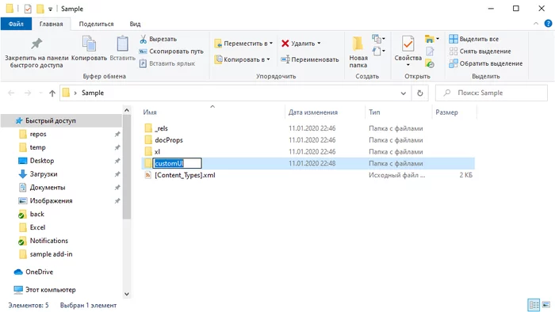
Now add the component itself:
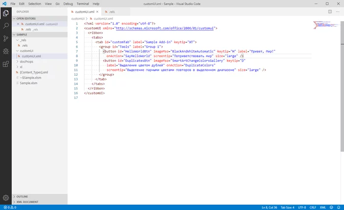
The customUI.xml file
The text version of customUI.xml:
<?xml version="1.0" encoding="utf-8"?>
<customUI xmlns="http://schemas.microsoft.com/office/2006/01/customui">
<ribbon>
<tabs>
<tab id="customTab" label="Sample Add-in" keytip="XT">
<group id="Tools" label="Group 1">
<button id="HelloWorldBtn" imageMso="BlackAndWhiteAutomatic" keytip="H" label="Hello, World!"
onAction="SayHelloWorld" screentip="Say hello to the world" size="large" />
<button id="DuplicatesBtn" imageMso="SmartArtChangeColorsGallery" keytip="D"
label="Highlight duplicates" onAction="DuplicateColors"
screentip="Highlight repeated values in the selected range with paired colors" size="large" />
</group>
</tab>
</tabs>
</ribbon>
</customUI>A short overview of the important elements and attributes.
- Identifier values (the id attribute) must be unique. For some elements (for example tab, when you declare a new tab rather than extend an existing one via idMso) you must also set label, otherwise Excel will not show the element.
- The imageMso attribute sets the element icon from the ones built into Office. The list of available values is long but easy to find with a search.
- The button element is an ordinary button. Depending on the size attribute it can be small or large, the full height of the tab.
- The onAction attribute names the procedure to run on the primary action of the element (for example a click on a button). The procedure must have a specific signature (the number and types of arguments), which you can find in the specification. For example, an onAction handler for a button takes one argument of type
IRibbonControl. - The procedure name must not match the module name (or you must prefix it with the module name explicitly:
Module1.SayHelloWorld). - The keytip attribute helps with keyboard navigation: the Alt key lets you move between Excel tabs.
A markup sample is available in the Microsoft documentation: customUI sample. If you want to study the standard in detail, there is a specification: [MS-CUSTOMUI]: Custom UI XML Markup Specification.
If the file contains non-ASCII characters (for example Cyrillic), save it as UTF-8, otherwise Excel may not show the new tab.
The reference in the .rels file
For Excel to “see” the new component and understand what it is, we must reference it in the root relationships file, which is in the _rels folder and is called .rels. It is XML too, and for convenience you can format it (in VS Code: Ctrl+Shift+P → Format Document).
Add a Relationship element with the path to customUI.xml, the component type and an identifier (it does not matter which, as long as it is unique among the other Relationship elements):
<Relationship Id="rID4" Target="customUI/customUI.xml" Type="http://schemas.microsoft.com/office/2006/relationships/ui/extensibility" />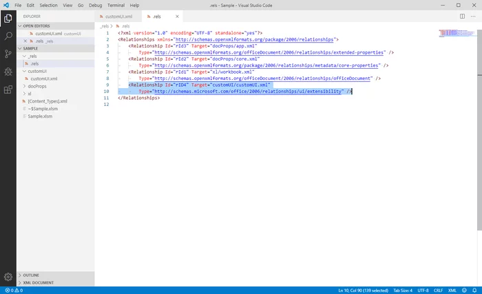
Now pack all the files back into an archive and restore the file name Sample.xlsm.
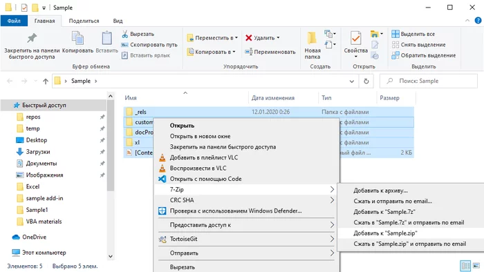
If everything was done correctly, a new tab appears on the ribbon when you open the workbook:
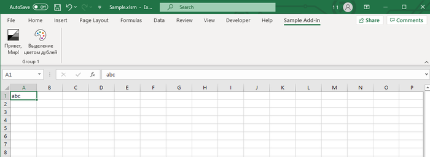
The “Wrong number of arguments” error
When you run the HelloWorld macro you may get this warning:
Wrong number of arguments or invalid property assignmentThis happens because a callback procedure must have a specific signature. A button click handler should look like this:
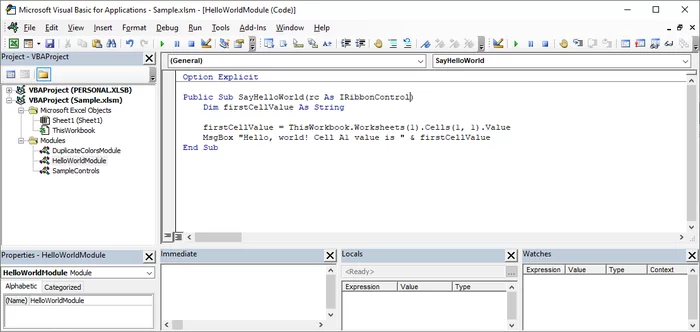
Add the rc As IRibbonControl argument and you will see the long-awaited greeting:
Option Explicit
Public Sub SayHelloWorld(rc As IRibbonControl)
Dim firstCellValue As String
firstCellValue = ThisWorkbook.Worksheets(1).Cells(1, 1).Value
MsgBox "Hello, world! Cell A1 value is " & firstCellValue
End Sub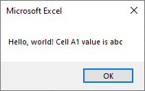
The list of signatures is on the Microsoft documentation site.
Saving as an add-in
All that remains is to save the workbook with macros as an add-in. In the VBE, select the ThisWorkbook object and set its IsAddin property to True.
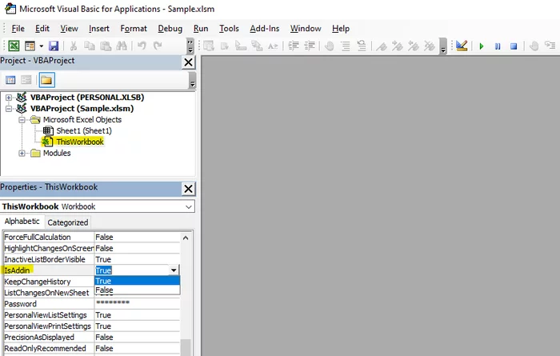
Then save the workbook in the new format (Excel will offer this itself if you press Ctrl+S):
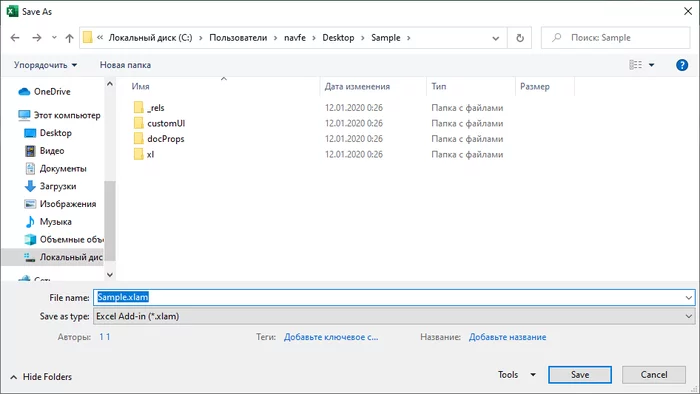
The add-in can now be opened like an ordinary workbook. It is not shown in a separate window, but it is visible in the Project Explorer of the VBE:
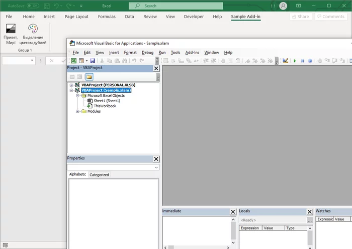
To make the add-in available right when Excel starts, install it from Excel Add-ins on the Developer tab...
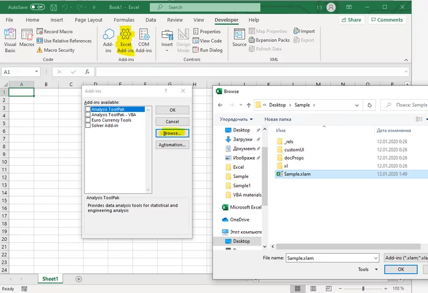
...or from the Excel options, in the Add-ins section:
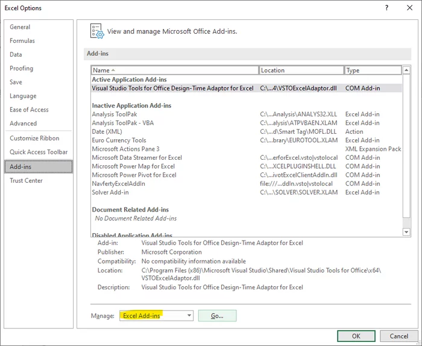
Done. The add-in can now be used with any document, and sharing it with colleagues is easy: just send them the add-in file.
Bonus: other Custom UI controls
- toggleButton — a button with two states;
- splitButton — a composite of a button or toggleButton and a drop-down menu;
- dropDown — a drop-down list with a predefined set of items;
- comboBox — an input field that can hold a predefined set of items;
- dynamicMenu — a drop-down list whose items are defined dynamically in the getContent method;
- checkBox — a check box with two states.
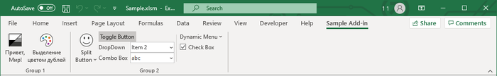
The markup and the VBA module code are below; you can also find them on GitHub.
customUI.xml
<?xml version="1.0" encoding="utf-8"?>
<customUI xmlns="http://schemas.microsoft.com/office/2006/01/customui">
<ribbon>
<tabs>
<tab id="customTab" label="Sample Add-in" keytip="XT">
<group id="SampleControls" label="Group 2">
<splitButton id="splitButton" size="large">
<button id="SplitButton" imageMso="HappyFace" label="Split Button" />
<menu id="menu">
<button id="button1" label="Button 1" onAction="OnSplitButton1Click" />
<button id="button2" label="Button 2" onAction="OnSplitButton2Click" />
</menu>
</splitButton>
<toggleButton id="ToggleButton" label="Toggle Button" onAction="OnToggleButtonClick" />
<dropDown id="DropDown" label="DropDown" onAction="OnDropDownSelected">
<item id="DropDownItem1" label="Item 1" />
<item id="DropDownItem2" label="Item 2" />
<item id="DropDownItem3" label="Item 3" />
<button id="button" label="Button..." />
</dropDown>
<comboBox id="ComboBox" label="Combo Box" onChange="OnComboBoxSelected">
<item id="ComboBoxItem1" label="Item 1" />
<item id="ComboBoxItem2" label="Item 2" />
<item id="ComboBoxItem3" label="Item 3" />
</comboBox>
<separator id="separator" />
<dynamicMenu id="DynamicMenu" label="Dynamic Menu" getContent="GetMenuContent" />
<checkBox id="CheckBox" label="Check Box" onAction="OnCheckBoxToggled" />
</group>
</tab>
</tabs>
</ribbon>
</customUI>SampleControls VBA module
Option Explicit
Public Sub OnSplitButton1Click(rc As IRibbonControl)
MsgBox "Split button 1 was clicked"
End Sub
Public Sub OnSplitButton2Click(rc As IRibbonControl)
MsgBox "Split button 2 was clicked"
End Sub
Public Sub OnToggleButtonClick(rc As IRibbonControl, isButtonPressed As Boolean)
MsgBox "Toggle button was toggled, button now is " & IIf(isButtonPressed, "pressed", "not pressed")
End Sub
Public Sub OnDropDownSelected(rc As IRibbonControl, selectedItemId As String, selectedItemIndex As Integer)
MsgBox "DropDown was changed, selected item id is " & selectedItemId
End Sub
Public Sub OnComboBoxSelected(rc As IRibbonControl, comboBoxValue As String)
MsgBox "Combo box was changed, value is " & comboBoxValue
End Sub
Public Sub GetMenuContent(rc As IRibbonControl, ByRef returnedVal)
Dim xml As String
xml = "<menu xmlns=""http://schemas.microsoft.com/office/2006/01/customui"">" & _
"<button id=""but1"" imageMso=""Help"" label=""Help"" onAction=""OnHelpPressed""/>" & _
"<button id=""but2"" imageMso=""FindDialog"" label=""Find"" onAction=""OnFindPressed""/>" & _
"</menu>"
returnedVal = xml
End Sub
Public Sub OnCheckBoxToggled(rc As IRibbonControl, isButtonChecked As Boolean)
MsgBox "Check box was toggled, value is " & IIf(isButtonChecked, "checked", "not checked")
End Sub
Public Sub OnHelpPressed(rc As IRibbonControl)
MsgBox "Help button pressed"
End Sub
Public Sub OnFindPressed(rc As IRibbonControl)
MsgBox "Find button pressed"
End SubMore about the Custom UI elements: Microsoft documentation.
One more bonus: VBE keyboard shortcuts
Moving around the editor
- Ctrl+R — go to the Project Explorer
- F4 — go to the Properties window
- Ctrl+G — go to the Immediate window
- F7 — go to the code editor window
- Ctrl+Tab (Ctrl+Shift+Tab) — switch between open module windows
- Ctrl+F4 — close the current module
- Alt+F11 — open the VBE
Editing and code navigation
- Ctrl+Space — auto-complete
- Ctrl+J — show the available options (IntelliSense)
- Ctrl+I — show information about a method (its arguments)
- Shift+F2 — go to the definition of a variable or method
Debugging
- F5 — run the macro or continue execution
- F8 — step forward (into nested procedures)
- Shift+F8 — step forward (without going inside)
- F9 — set or remove a breakpoint
- Shift+F9 — add a watch (quick watch)
- Ctrl+L — show the call stack (clickable)
There is more on debugging in Debugging VBA code in Excel.
Originally published in Russian on Pikabu.
Создание VBA-надстройки с отдельной вкладкой в MS Excel
Как упаковать VBA-макросы в надстройку .xlam с собственной вкладкой на ленте: правка книги как zip-архива, customUI.xml, обработчики и установка.
Многие, кто часто работает в Excel, накопили коллекцию VBA-макросов, облегчающих ежедневный труд. Одни хранят макросы в отдельной книге, другие собрали их в «личной книге макросов» (personal.xlsb), доступной на уровне всего приложения, и вручную добавили кнопки вызова на панель инструментов. В первом случае коллекцией удобно делиться с коллегами (достаточно переслать файл), но чтобы ею воспользоваться, книгу нужно каждый раз открывать. Во втором случае доступ к функциям есть сразу при запуске Excel, но с передачей наработок другим пользователям могут быть сложности.
В этой статье описан способ сделать VBA-надстройку с собственной вкладкой на ленте Excel (Ribbon), которая сочетает преимущества обоих подходов. Это файл в формате xlam, которым можно делиться как обычной книгой. Когда пользователь открывает его, на ленте появляется вкладка с доступом к функциям надстройки:
При желании надстройку можно установить на постоянной основе, чтобы не открывать её каждый раз.
Понадобятся: Excel, 7-Zip и Visual Studio Code. Последние два необязательны: подойдёт любой архиватор с поддержкой zip и любой текстовый редактор, умеющий сохранять в UTF-8 (если вы хотите использовать кириллицу). Желательно также иметь базовое представление о формате XML.
Код и готовую книгу xlsm можно найти на GitHub: https://github.com/navferty/SampleExcelXlamAddin
Подготовка книги
Откроем новую книгу и добавим модуль с образцом кода:
Option Explicit
Public Sub SayHelloWorld()
Dim firstCellValue As String
firstCellValue = ThisWorkbook.Worksheets(1).Cells(1, 1).Value
MsgBox "Hello, world! Cell A1 value is " & firstCellValue
End SubСохраним книгу в формате xlsm (книга с поддержкой макросов). Современные форматы документов Office (xlsx, xlsm, docx, docm, pptx и т. д.) основаны на стандарте OpenXML и представляют собой обычный zip-архив из компонентов (XML-файлы листов, изображения, двоичное содержимое и прочее) и файлов отношений (.rels), которые задают структуру документа ссылками на компоненты.
Чтобы увидеть содержимое книги, можно переименовать Sample.xlsm в Sample.zip и открыть любым архиватором. Некоторые архиваторы, например 7-Zip, умеют открывать такие файлы напрямую, без переименования:
Чтобы добавить панель на ленту, нужно создать новый компонент customUI/customUI.xml и добавить ссылку на него в корневой файл отношений _rels/.rels.
Распакуем весь документ в отдельную папку (в 7-Zip: «Распаковать в "Sample\"») и создадим в ней папку customUI:
Теперь добавим сам компонент:
Файл customUI.xml
Текстовая версия содержимого customUI.xml:
<?xml version="1.0" encoding="utf-8"?>
<customUI xmlns="http://schemas.microsoft.com/office/2006/01/customui">
<ribbon>
<tabs>
<tab id="customTab" label="Sample Add-in" keytip="XT">
<group id="Tools" label="Group 1">
<button id="HelloWorldBtn" imageMso="BlackAndWhiteAutomatic" keytip="H" label="Привет, Мир!"
onAction="SayHelloWorld" screentip="Поприветствовать мир" size="large" />
<button id="DuplicatesBtn" imageMso="SmartArtChangeColorsGallery" keytip="D"
label="Выделение цветом дублей" onAction="DuplicateColors"
screentip="Выделение парными цветами повторов в выделенном диапазоне" size="large" />
</group>
</tab>
</tabs>
</ribbon>
</customUI>Коротко о важных элементах и атрибутах.
- Значения идентификаторов (атрибут id) должны быть уникальными. Для некоторых элементов (например, tab, когда вы объявляете новую вкладку, а не существующую через idMso) нужно обязательно указать и label, иначе Excel не покажет элемент.
- Атрибут imageMso задаёт значок элемента из числа имеющихся в Office. Список доступных значений большой, но легко находится поиском.
- Элемент button — обычная кнопка. В зависимости от атрибута size она может быть маленькой или большой, во всю высоту вкладки.
- Атрибут onAction задаёт имя процедуры, которая будет выполнена при основном действии с элементом (например, при нажатии кнопки). У процедуры должна быть определённая сигнатура (число и тип аргументов), её можно найти в спецификации. Например, обработчик onAction для button принимает один аргумент типа
IRibbonControl. - Имя процедуры не должно совпадать с именем модуля (или нужно явно указать модуль перед именем:
Module1.SayHelloWorld). - Атрибут keytip помогает при навигации с клавиатуры: клавишей Alt можно переходить по вкладкам Excel.
Образец разметки есть в документации Microsoft: образец customUI. Тем, кто хочет изучить стандарт подробно, пригодится спецификация: [MS-CUSTOMUI]: Custom UI XML Markup Specification.
Если в файле есть не-ASCII символы (например, кириллица), сохраняйте его в кодировке UTF-8, иначе Excel может не показать новую вкладку.
Ссылка в файле .rels
Чтобы Excel «увидел» новый компонент и понял, что это, нужно сослаться на него в корневом файле отношений в папке _rels, он называется .rels. Это тоже XML, и для удобства его можно отформатировать (в VS Code: Ctrl+Shift+P → Format Document).
Добавляем элемент Relationship с путём к customUI.xml, типом компонента и идентификатором (какой именно, не важно, главное, чтобы он был уникальным среди других элементов Relationship):
<Relationship Id="rID4" Target="customUI/customUI.xml" Type="http://schemas.microsoft.com/office/2006/relationships/ui/extensibility" />Теперь запакуйте все файлы обратно в архив и верните имя Sample.xlsm.
Если всё сделано правильно, при открытии книги на ленте появится новая вкладка:
Ошибка «Wrong number of arguments»
При запуске макроса HelloWorld можно увидеть предупреждение:
Wrong number of arguments or invalid property assignmentПричина в том, что процедура-обработчик должна иметь определённую сигнатуру. Обработчик нажатия на button выглядит так:
Добавьте аргумент rc As IRibbonControl, и появится долгожданное приветствие:
Option Explicit
Public Sub SayHelloWorld(rc As IRibbonControl)
Dim firstCellValue As String
firstCellValue = ThisWorkbook.Worksheets(1).Cells(1, 1).Value
MsgBox "Hello, world! Cell A1 value is " & firstCellValue
End SubСписок сигнатур есть на сайте документации Microsoft.
Сохранение как надстройки
Осталось сохранить книгу с макросами как надстройку. В редакторе VBE выберите объект ThisWorkbook и установите свойство IsAddin в True.
Затем сохраните книгу в новом формате (Excel предложит это сам, если нажать Ctrl+S):
Теперь надстройку можно открыть как обычную книгу. Отдельным окном она не отображается, но видна в Project Explorer редактора VBE:
Чтобы надстройка была доступна сразу при запуске Excel, установите её через Excel Add-ins на вкладке «Разработчик»...
...или через параметры Excel, раздел «Надстройки» (Add-ins):
Готово. Теперь надстройкой можно пользоваться при работе с любым документом, а делиться наработками с коллегами легко, просто пересылая файл надстройки.
Бонус: другие элементы Custom UI
- toggleButton — кнопка с двумя состояниями;
- splitButton — составной элемент из button или toggleButton и выпадающего меню;
- dropDown — выпадающий список с заранее заданным набором элементов;
- comboBox — поле ввода, которое может содержать заранее заданный набор элементов;
- dynamicMenu — выпадающий список, элементы которого определяются динамически в методе getContent;
- checkBox — флажок с двумя состояниями.
Разметка и код модуля VBA приведены ниже, их же можно найти на GitHub.
customUI.xml
<?xml version="1.0" encoding="utf-8"?>
<customUI xmlns="http://schemas.microsoft.com/office/2006/01/customui">
<ribbon>
<tabs>
<tab id="customTab" label="Sample Add-in" keytip="XT">
<group id="SampleControls" label="Group 2">
<splitButton id="splitButton" size="large">
<button id="SplitButton" imageMso="HappyFace" label="Split Button" />
<menu id="menu">
<button id="button1" label="Button 1" onAction="OnSplitButton1Click" />
<button id="button2" label="Button 2" onAction="OnSplitButton2Click" />
</menu>
</splitButton>
<toggleButton id="ToggleButton" label="Toggle Button" onAction="OnToggleButtonClick" />
<dropDown id="DropDown" label="DropDown" onAction="OnDropDownSelected">
<item id="DropDownItem1" label="Item 1" />
<item id="DropDownItem2" label="Item 2" />
<item id="DropDownItem3" label="Item 3" />
<button id="button" label="Button..." />
</dropDown>
<comboBox id="ComboBox" label="Combo Box" onChange="OnComboBoxSelected">
<item id="ComboBoxItem1" label="Item 1" />
<item id="ComboBoxItem2" label="Item 2" />
<item id="ComboBoxItem3" label="Item 3" />
</comboBox>
<separator id="separator" />
<dynamicMenu id="DynamicMenu" label="Dynamic Menu" getContent="GetMenuContent" />
<checkBox id="CheckBox" label="Check Box" onAction="OnCheckBoxToggled" />
</group>
</tab>
</tabs>
</ribbon>
</customUI>VBA-модуль SampleControls
Option Explicit
Public Sub OnSplitButton1Click(rc As IRibbonControl)
MsgBox "Split button 1 was clicked"
End Sub
Public Sub OnSplitButton2Click(rc As IRibbonControl)
MsgBox "Split button 2 was clicked"
End Sub
Public Sub OnToggleButtonClick(rc As IRibbonControl, isButtonPressed As Boolean)
MsgBox "Toggle button was toggled, button now is " & IIf(isButtonPressed, "pressed", "not pressed")
End Sub
Public Sub OnDropDownSelected(rc As IRibbonControl, selectedItemId As String, selectedItemIndex As Integer)
MsgBox "DropDown was changed, selected item id is " & selectedItemId
End Sub
Public Sub OnComboBoxSelected(rc As IRibbonControl, comboBoxValue As String)
MsgBox "Combo box was changed, value is " & comboBoxValue
End Sub
Public Sub GetMenuContent(rc As IRibbonControl, ByRef returnedVal)
Dim xml As String
xml = "<menu xmlns=""http://schemas.microsoft.com/office/2006/01/customui"">" & _
"<button id=""but1"" imageMso=""Help"" label=""Help"" onAction=""OnHelpPressed""/>" & _
"<button id=""but2"" imageMso=""FindDialog"" label=""Find"" onAction=""OnFindPressed""/>" & _
"</menu>"
returnedVal = xml
End Sub
Public Sub OnCheckBoxToggled(rc As IRibbonControl, isButtonChecked As Boolean)
MsgBox "Check box was toggled, value is " & IIf(isButtonChecked, "checked", "not checked")
End Sub
Public Sub OnHelpPressed(rc As IRibbonControl)
MsgBox "Help button pressed"
End Sub
Public Sub OnFindPressed(rc As IRibbonControl)
MsgBox "Find button pressed"
End SubПодробнее об элементах Custom UI: документация Microsoft.
Ещё бонус: горячие клавиши редактора VBE
Навигация по редактору
- Ctrl+R — перейти в окно проектов (Project Explorer)
- F4 — перейти к свойствам
- Ctrl+G — перейти в окно Immediate
- F7 — перейти в окно редактора кода
- Ctrl+Tab (Ctrl+Shift+Tab) — переключение между открытыми окнами модулей
- Ctrl+F4 — закрыть текущий модуль
- Alt+F11 — открыть редактор VBE
Редактирование и навигация по коду
- Ctrl+Space — автодополнение
- Ctrl+J — показать доступные варианты (IntelliSense)
- Ctrl+I — показать информацию о методе (аргументы)
- Shift+F2 — перейти к определению переменной или метода
Отладка
- F5 — запустить макрос или продолжить выполнение
- F8 — шаг вперёд (с заходом во вложенные процедуры)
- Shift+F8 — шаг вперёд (без захода вглубь)
- F9 — установить или снять точку останова
- Shift+F9 — добавить наблюдателя (quick watch)
- Ctrl+L — показать стек вызовов (элементы кликабельны)
О приёмах отладки подробнее в статье «Приёмы отладки VBA-кода».
Статья впервые опубликована на Пикабу.